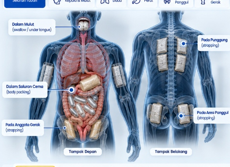

Fokus Area Tubuh:
Tampak Depan
Tampak Belakang

1
Dalam Mulut (Swallowing)
2
Saluran Cerna (Body Packing)
3
Pada Anggota Gerak (Strapping)
4
Di Balik Pakaian (Strapping)
5
Pada Area Panggul (Strapping)
MODUS #01
SALURAN PENCERNAAN
Saluran Cerna (Body Packing / Swallowing)

Kurir menelan puluhan hingga ratusan kapsul/kondom berisi narkotika (sering kali kokain atau heroin) untuk disembunyikan di dalam saluran pencernaan (lambung dan usus) selama perjalanan.
Contoh Temuan:
{kind=link}
{kind=link}
{kind=link}
Indikator Risiko
- Menolak makan atau minum sama sekali selama perjalanan
- Penggunaan obat anti-diare secara berlebihan (Loperamide)
- Gugup ekstrem, keringat dingin, postur tubuh tegang kaku
- Bau mulut khas lateks atau pembungkus karet/plastik
Tindakan Pemeriksaan
- Wawancara mendalam & analisis profil risiko kesesuaian tiket
- Pemeriksaan Sinar-X Abdomen / CT Scan di RS rujukan DJBC
- Isolasi di ruangan medis khusus hingga proses BAB tuntas
- Dokumentasi forensik BB & koordinasi penyidik penindakan
Peringatan Medis: Ruptur satu kapsul saja dapat memicu intoksikasi fatal dan henti jantung dalam hitungan menit.